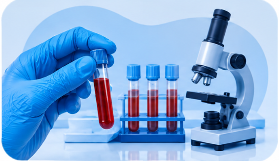

Trusted in Bachupally
One of the most trusted and reputed diagnostic centres in Bachupally, Telangana.
Advanced diagnostics and imaging with accuracy, technology and better health.
Your Health, Our Priority.
GENX Advanced Diagnostics & Imaging is committed to delivering reliable diagnostic services through advanced technology, experienced professionals and quality-focused laboratory practices.
We aim to make comprehensive diagnostic testing accessible, accurate and affordable—bringing essential services together in one welcoming centre.
Get your diagnostic tests done from the comfort of your home. Contact our team to arrange collection.
Technology and thoughtful service, working together for better health.

From your first visit through your report, we focus on a clear, respectful experience.
Why GENX ↗One of the most trusted and reputed diagnostic centres in Bachupally, Telangana.
Located in Mallampet, Bachupally.
Serving Mallampet, Bachupally.
Latest technology and quality administration.
GENX states ISO 9001:2015 certification.
Main lab with a dedicated research and innovation division.
Advanced molecular analysis for accurate diagnosis and personalised care.
A broad range of diagnostic tests.
Associated with an accredited network in Hyderabad.
GENX states an association with ICMR-recognised diagnostics.
Reliable diagnostic services at accessible costs.
High standards and a focus on precision and innovation.
Helpful information about GENX diagnostic services, tests and imaging.

Laboratory testing is one of the diagnostic services available at GENX. Your clinician can explain which test has been requested and how its result fits your care.
Explore Pathology ↗Preparation can vary depending on the test. Check the instructions from your clinician or GENX team before your appointment, and ask us if you need help confirming what to do.
Explore Pathology ↗Scan instructions depend on the type of ultrasound. When booking, confirm any preparation details with the GENX team and follow the guidance provided for your appointment.
Explore Ultrasound ↗An ECG appointment records information about your heart's electrical activity. Bring any referral or test details, wear comfortable clothing, and ask the GENX team if you have questions about your appointment.
Explore ECG ↗Collection and handling instructions can differ by test and sample type. Follow the directions provided for your specific test, and contact GENX if you need help before your visit.
Explore Microbiology ↗If genetic testing has been recommended, ask your clinician what the test is intended to assess, what sample is needed, and how the findings will be discussed with you.
Explore Genetic Testing ↗These articles provide general information only and are not a substitute for advice from your healthcare provider. Always follow the instructions for your specific test or scan.
Tell us what you need and our team will help coordinate your appointment.
3rd Floor, Vijetha Super Market Building, Mallampet, Bachupally, Hyderabad – 500090